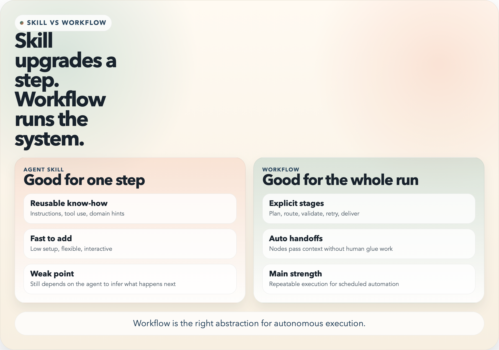
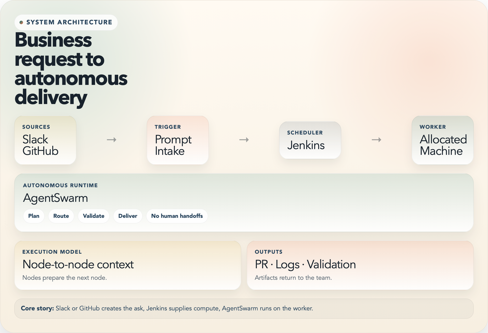
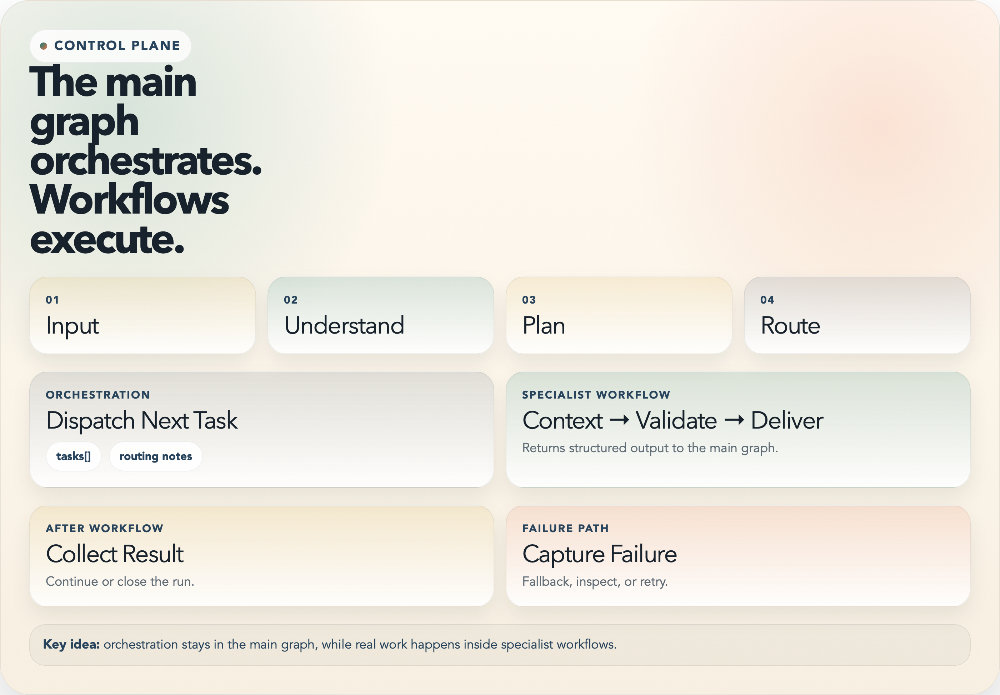
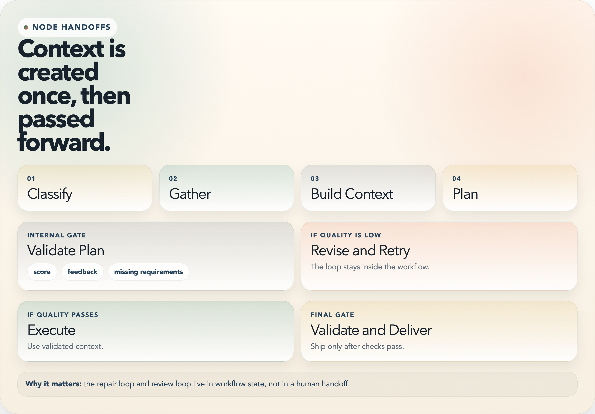

Automate the whole flow, not just the answer
Built for end-to-end execution. Humans should not supply missing context in the middle of the run.
The request starts in the tools the team already uses.
A worker is scheduled so the run can start automatically.
Plan, route, validate, and deliver without manual glue work.
Long prompts still leave orchestration to chance
If one model is asked to infer the whole process, the run can drift and humans end up filling the gaps.
Human-assisted long-prompt model
Probabilistic- One prompt owns too much so planning, routing, and review blur together.
- Humans often bridge gaps when the model misses context mid-run.
- Two runs can diverge because the model interprets flow differently each time.
AgentSwarm workflow runtime
Structured- The graph fixes the run shape before execution begins.
- Only narrow steps call an LLM so responses stay on topic.
- Nodes pass context forward and repeated runs follow the same orchestration model.
Agent Skill helps a step. Workflow governs the run.
Use a Skill for reusable expertise inside one step. Use a Workflow when the whole run must move, validate, retry, and finish without human coordination.

Where AgentSwarm runs in the delivery pipeline
The request starts in Slack or GitHub. Jenkins schedules a worker. AgentSwarm runs on that machine and sends artifacts back.
Slack, GitHub Issue, or another intake channel.
Jenkins allocates compute and starts the run.
AgentSwarm plans, routes, validates, and delivers.

Orchestration stays separate from specialist execution
The main graph decides what should happen next. Specialist workflows handle the actual work.
Turn one ask into explicit work units.
Choose the right workflow for that unit.
Merge output back into state and continue.

Nodes prepare the next node
Context is created early, reviewed inside the workflow, and reused by later nodes. Humans are not the transport layer.
Early nodes gather what later nodes will need.
Validation happens as an internal gate.
Failures loop back with better context.

Autonomy needs evidence, not just output
A full run must be observable, restartable, and safe to inspect.
Deterministic fallback
The run keeps moving even when a model is unavailable.
Thread-aware checkpoints
State can be inspected, resumed, and compared.
Graph-level observability
Operators can inspect traversal, not only the final answer.
Tests validate runtime behavior
Routing and workflow behavior can be checked end to end.
What one run leaves behind
Run outputs Execution summary Checkpoints Graph logs Working artifacts Validation results
The run leaves evidence behind, not only text.
What AgentSwarm changes for the team
Removes manual glue work
People stop copying context between tools.
Makes execution more repeatable
The graph keeps repeated runs on the same path.
Scales specialist automation
New workflows can replace the next manual gap.
Keeps AI risk bounded
LLMs stay inside narrow tasks, not whole-run orchestration.
Good next moves
- Automate the next manual gap with a workflow.
- Keep routing simple so behavior stays auditable.
- Standardize artifacts so workflows can hand off cleanly.
Presentation takeaway
Slack or GitHub creates the ask. Jenkins starts the worker. AgentSwarm carries the run to delivery.